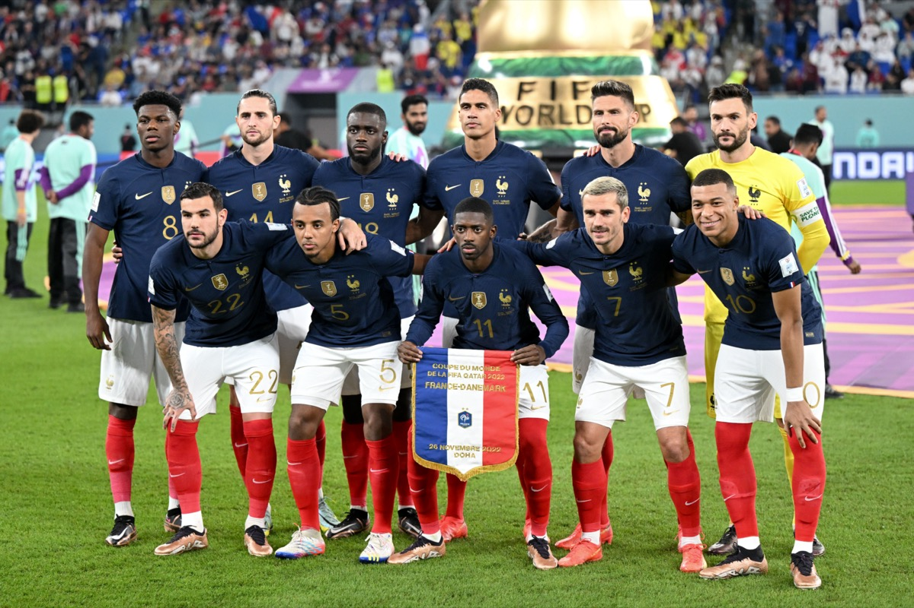

Thierry Henry, Nicolas Anelka, William Gallas, Blaise Matuidi và Hatem Ben Arfa, tất cả đều là những tuyển thủ quốc gia Pháp. Và tất cả đều đi chung trên một con đường. Những cầu thủ khác, ví dụ Anthony Martial, cũng chỉ mong một lần có cơ hội được mài giũa những kỹ năng của mình trên thảm cỏ xanh của Montjoye, một khu vực cách Paris khoảng 50km về phía tây nam. Họ, rất tiếc, đã bị loại từ vòng tuyển chọn. Học viện Bóng đá Quốc gia Clairefontaine-en-Yvelines, vẫn được biết đến dưới cái tên vắn tắt là INF Clairefontaine, không chỉ là đại bản doanh của đội tuyển quốc gia Pháp, mà còn là điểm đến trong mơ đối với những cầu thủ trẻ xuất thân từ vùng Paris. Từ năm 1998, một số ít những cậu bé may mắn và tài năng đã có cơ hội được tiếp cận gần như miễn phí những điều kiện tập luyện tối ưu ở đây trong vòng hai năm, từ khi 13 tới khi 15 tuổi, nhằm có sự chuẩn bị tốt nhất trước khi gia nhập học viện của một câu lạc bộ chuyên nghiệp nào đó. “INF là một dự án tập trung đồng thời vào ba khía cạnh: đức tin, thể thao và giáo dục,” cựu Giám đốc học viện - Gérard Prêcheur - giải thích. “Mục tiêu chính của những đứa trẻ này là đạt được giấc mơ [bóng đá] của mình, nhưng như thế không có nghĩa là chúng có thể lơ là việc học hành hay phủ nhận tầm quan trọng của đức tin. Bởi phần lớn những đứa trẻ đó sẽ không thể đi đến đích với bóng đá. Ở Pháp, mỗi năm chỉ có khoảng 80 hay 90 cầu thủ được ký hợp đồng chuyên nghiệp đầu tiên.”

.Điều này thì có ý nghĩa gì với Kylian? Trong khi chờ đợi tới lúc đủ 15 tuổi để gia nhập học viện Stade Malherbe Caen, vào tháng 8/2011, cậu bé đăng ký học ở học viện INF Clairefontaine. Vài tháng sau, cậu vượt qua tất cả các bài kiểm tra đầu vào một cách xuất sắc, và gây ấn tượng mạnh với bất kỳ ai xem cậu chơi bóng. “Cậu ta đơn giản là đã hút hết ánh sáng về phía mình,” Prêcheur nhớ lại. “Tôi phải lòng thằng bé ngay từ cái nhìn đầu tiên. Khi có bóng, cậu ta đã làm được điều mà hiếm đứa bé nào ở cùng độ tuổi có thể làm được là kết hợp giữa những kỹ năng cá nhân với tốc độ thực hiện. Cậu ta cũng thể hiện một xu hướng rất tự nhiên trong việc tránh đi vào những lối mòn. Quan trọng là cậu bé biết mình muốn gì: ‘Trở thành cầu thủ chuyên nghiệp’, ‘trở thành một trong những người giỏi nhất’, ‘giành Ballon d’Or’. Những mục tiêu ấy đã được ghim chắc trong đầu của Kylian, và cậu ta đã thể hiện chúng ra một cách hết sức mạnh mẽ. Vì điểm số của Kylian rất ổn, nên không có gì ngạc nhiên khi cậu bé là một trong 22 người được chọn, trong số 2.000 em dự thi. Cậu ta sẽ đến Clairefontaine vào các buổi tối Chủ nhật và tập luyện vào tất cả các ngày trong tuần. Cùng lúc đó, cậu ta sẽ theo một chương trình học được thiết kế riêng tại trường Trung học Collège Catherine de Vivonne ở Rambouillet. Cậu ta trở về với gia đình ở Bondy vào các tối thứ Sáu để có thể ra sân vào các cuối tuần với câu lạc bộ của mình. Trong năm đầu tiên, Kylian đã ‘nhảy cóc’ 2 độ tuổi để đá cho đội U-15. Tới năm tiếp theo thì cậu lên hẳn đội U-17.”
Dù còn rất ít tuổi - khi gia nhập INF, Kylian chưa bước sang tuổi 13 - cậu bé tới từ Bondy vẫn thích nghi được với cuộc sống mới một cách rất nhanh chóng. Trong năm đầu tiên ở trường nội trú Clairefontaine, Kylian ở chung phòng với Armand Lauriente, một tiền đạo khác tới từ Sarcelles. Tới năm thứ hai thì cậu lại chuyển sang ở cùng với Khamis Digol N’Dozangue, hậu vệ sau này sẽ chuyển tới AJ Auxerre. Giữa những trận bài Crazy Eights và những buổi chém gió về bóng đá, Kylian nhanh chóng trở thành một ngôi sao ở học viện nhờ tính cách cởi mở, hòa đồng. “Cậu ta sẽ là người đầu tiên pha trò, và thường thì khi đã bắt đầu rồi cậu ta sẽ không dừng lại,” Kilian Bevis, người vào Clairefontaine cùng một đợt với Kylian nhưng sau đó đã quyết định trở lại chơi bóng nghiệp dư, xác nhận. “Chúng tôi đặt cho cậu ta rất nhiều biệt danh. Một trong đó là El Bébé, vì cậu ta rất hay bĩu môi. Chúng tôi cũng gọi cậu ta là Peanuts, vì đầu cậu ta trông giống hai củ lạc chồng lên nhau.”
“Kylian luôn là người đầu trò. Cậu ta luôn là một trong những người đầu tiên khuấy động không khí bằng cách trêu chọc những người khác, nhất là trong các màn đọ tài hát ứng khẩu mà chúng tôi hay tổ chức trong khi ngồi trên xe bus từ trường tới sân tập!”, tiền đạo Yann Kitala, người vào năm 2017 đã ký hợp đồng chuyên nghiệp với Olympique Lyonnais, bổ sung. “Chúng tôi như anh em một nhà. Và không lúc nào thôi nghĩ về bóng đá. Chúng tôi thường tổ chức thi đấu solo ngay trong phòng. Và nếu như thế vẫn chưa đủ thỏa mãn, cả bọn lại cùng lẻn xuống sân để đá các trận sân 5. Do không có đèn đóm gì cả, nên chúng tôi buộc phải dùng điện thoại để chiếu sáng!”
Nhưng cũng chính ở Clairefontaine, nơi có khoảng 20 cầu thủ nhí thuộc lứa 1998 tập luyện mỗi buổi chiều sau giờ học dưới sự giám sát của Jean-Claude Lafargue, Kylian bắt đầu biết thế nào là cảm giác phải cạnh tranh. “Ở Bondy, cậu ta là ngôi sao, là cầu thủ xuất sắc nhất của đội và của cả giải đấu. Nhưng ở INF, xung quanh cậu ta đều là những cầu thủ cùng trình độ, thậm chí giỏi hơn,” một trong những đồng đội cũ của Kylian kể lại. “Đúng là trong hai năm ở INF, không phải lúc nào mọi thứ cũng thuận lợi với Kylian,” Gérard Prêcheur xác nhận. “Ở các câu lạc bộ nghiệp dư, các tiền đạo không bị yêu cầu phải tham gia phòng ngự nhiều. Ở đây thì khác. Kylian nhanh chóng nhận ra xung quanh cậu ta là những cầu thủ giỏi nhất trong vùng Paris. Điều đó thúc đẩy cậu ta nỗ lực hơn để vượt qua chính mình, cải thiện lối chơi, cả về mặt cá nhân lẫn đồng đội.”
Trong thời gian ở Clairefontaine, Kylian còn bị thử thách cả sức mạnh tinh thần. Mỗi tháng qua đi, thỏa thuận mà gia đình anh đã có với Stade Malherbe Caen hồi 2011 lại càng trở nên bấp bênh hơn. Đội bóng xứ Normandy không có được thành tích tốt, và buộc phải cắt giảm ngân sách. “Tới cuối năm đầu tiên của Kylian ở INF, các bên vẫn chưa ký với nhau bất kỳ một giấy tờ nào. Chúng tôi muốn làm một cái gì đó, nhưng không phải cứ muốn là được. Tình hình càng trở nên khó khăn hơn khi đội bóng phải xuống chơi ở Ligue 2 vào cuối mùa 2011-12,” Laurent Glaize nói với giọng vẫn còn chút cay đắng. “Chúng tôi vẫn giữ liên lạc với gia đình Kylian, nhưng tới một lúc thì các giám đốc của Caen đã yêu cầu tôi buông xuôi. Chủ tịch của câu lạc bộ ở thời điểm đó, ông Jean-François Fortin, là người luôn đặt quyền lợi của nhân viên lên trên hết.
Ông đứng giữa hai lựa chọn, tiêu 60.000 euro mỗi năm cho một cậu bé 13 tuổi, và giữ lại một hoặc hai nhân viên. Quyết định cuối cùng được đưa ra rất nhanh, dù ai cũng biết Kylian có thể là một vụ đầu tư tốt nếu đội bóng có được cậu ta. Ban giám đốc yêu cầu tôi thông báo với gia đình Kylian. Vào giữa mùa giải 2012-13, tôi cho họ biết quyết định cuối cùng của đội bóng qua điện thoại. Ở đầu dây bên kia, Fayza tỏ ra lo lắng: ‘Bây giờ chúng tôi phải làm gì đây? Tôi đã thông báo với tất cả các đội bóng khác là chúng tôi sẽ ký hợp đồng với các ông!’ Phải thừa nhận đó là khoảnh khắc khó khăn nhất trong sự nghiệp của tôi. Nói ‘không’ với Kylian Mbappé...”
Thỏa thuận hụt với Caen có ảnh hưởng gì nhiều tới sự nghiệp của Kylian không? Không nhiều lắm. Thiên tài nhỏ tới từ Seine-Saint-Denis nhanh chóng nhận ra hàng loạt đội bóng lớn đã trở lại săn đón anh sau khi cảm nhận được rằng gió đã đổi chiều. Cũng nhờ thế, Kylian có cơ hội để thực hiện điều mà cậu đã hứa với chú Pierre Mbappé sau khi được chú tặng một mô hình sân Santiago-Bernabeu trong lễ sinh nhật 10 tuổi. “Một ngày nào đó cháu sẽ đưa chú tới Real Madrid,” cậu bé nói một cách đầy tự tin trước sự chứng kiến của những người tham dự bữa tiệc. Lúc đó mọi người đều cười ồ lên, một vài người nhẹ nhàng trêu chọc cậu bé. Nhưng bốn năm sau, giấc mơ tưởng điên rồ đó của cậu đã trở thành hiện thực. Kylian lọt vào mắt xanh của một tuyển trạch viên của Real Madrid vào tháng 11/2012, trong một trận đấu cho INF Clairefontaine. Đó là điều mà người đứng đầu bộ phận tuyển trạch của đội bóng Tây Ban Nha nói với Wilfrid khi gọi điện để mời con trai của ông tới Madrid thử việc trong vòng một tuần. “Lời mời ấy đến đúng vào tuần có sinh nhật của thằng bé,” bố mẹ Kylian nói với báo chí địa phương. “Thế nên, chúng tôi tới Tây Ban Nha không phải là để khám phá thêm tiềm năng của Kylian; chúng tôi xem chuyến đi ấy như là một món quà sinh nhật cho thằng bé.”
Đi cùng gia đình Kylian có chú Pierre Mbappé và người bạn lâu năm của gia đình, Alain Mboma. Real Madrid đã tổ chức đón tiếp họ theo cách mà chỉ có những đội bóng lớn mới làm được. Phái đoàn nhà Kylian đặt chân xuống sân bay ở Madrid vào ngày 16/12/2012. Một chiếc xe đã chờ sẵn ở bên ngoài để đưa họ về khách sạn. Kylian sau đó đã kể lại chi tiết phần còn lại của hành trình với một tờ tuần san của Pháp: “Ngày đầu tiên, chúng tôi được mời dự khán trận đấu với Espanyol ở Liga. Sáng tiếp theo, chúng tôi tới học viện. Monsieur Zidane dẫn chúng tôi tham quan một vòng, rồi sau đó tôi bước vào buổi tập đầu tiên. Chúng tôi cứ thế chơi thôi! Tôi cũng có tham gia một trận đấu. Đến ngày thứ tư, trong khi đang làm nguội, tôi nhìn thấy các cầu thủ của Real Madrid. Tôi lao tới xin chụp ảnh cùng với tất cả mọi người!”
Trong một bức ảnh được chụp ở trung tâm huấn luyện Valdebebas, Kylian, trong bộ đồ tập của Real Madrid, đang tay trong tay với thần tượng thời thơ ấu, Cristiano Ronaldo. Ngôi sao người Bồ Đào Nha vẫn cười rất tươi dù mới vài ngày trước đó, Real Madrid của anh bị cầm hòa 2-2. Về phần mình, Kylian trông không có chút nào gọi là e dè; cậu bé giơ hai ngón tay lên làm thành biểu tượng chiến thắng. Cuộc gặp gỡ với người sau này sẽ sở hữu tới 5 danh hiệu Ballon d’Or sẽ còn được Kylian xem là chiến lợi phẩm giá trị nhất từ chuyến đi tới Madrid trong một thời gian dài nữa.
Khi trở lại vùng Paris, Kylian kể với các bạn không sót một chi tiết nào về chuyến phiêu lưu khó tin mà cậu vừa trải qua. “Cậu ta kể về các cuộc gặp với Zidane và Ronaldo. Cậu ta cũng cho chúng tôi xem các bức ảnh, nhưng không phải để khoe khoang,” Théo Suner nhớ lại. “Tất nhiên là câu chuyện của Kylian khiến chúng tôi ai cũng mơ là sẽ được như cậu ấy. Nhưng rồi chúng tôi cũng nhanh chóng nhận ra rằng những chuyện như thế là cực kỳ hiếm, không thể nào xảy ra với tất cả mọi người.”
Nhưng tấm thảm đỏ mà Real Madrid trải ra, và cùng với đó là sự hiện diện của một cựu thần tượng bóng đá Pháp, vẫn không đủ để khiến gia đình Mbappé đổi ý. Giống như sau chuyến đi tới Chelsea hồi 2011, rốt cuộc thì lý trí vẫn chiến thắng. “Chúng tôi không có ý định đổi ý. Ngay cả khi Zinedine Zidane thực sự quan tâm, chăm sóc và còn nói rõ cho chúng tôi biết về kế hoạch của Real Madrid với Kylian, chúng tôi vẫn giữ nguyên quan điểm là phải đánh giá mọi việc một cách xuyên suốt và tỉnh táo,” Pierre Mbappé nói trong một cuộc phỏng vấn sau đó. Việc người cháu được một trong những câu lạc bộ vĩ đại nhất thế giới theo đuổi dường như không hề khiến ông xao xuyến. “Ngay cả tới bây giờ người ta vẫn hỏi tôi là tại sao Kylian lại không tới Real. Câu trả lời rất đơn giản. Vì lúc đó thằng bé còn quá nhỏ tuổi và chẳng có gì đảm bảo là mọi chuyện sẽ đi đúng hướng. Người ta không nhận thấy vụ chuyển nhượng có thể là một biến động lớn tới thế nào với một cậu bé 14 tuổi. Nó sẽ phải thích nghi với một ngôn ngữ mới, một đội bóng mới, và cả gia đình cũng phải sống một cuộc sống hoàn toàn khác. Chúng tôi đã thảo luận rất nhiều trước khi đưa ra một lựa chọn.”
Lựa chọn ấy không có lợi cho Casa Blanca, hay cho Manchester City - đội bóng Anh thứ hai sau Chelsea khao khát có được Kylian. Hai đội bóng Pháp là Girondins de Bordeaux và Paris Saint-Germain cũng phải ra về tay trắng. Paris Saint-Germain, giống như tuyển trạch viên huyền thoại của họ là Pierre Reynaud, người phụ trách vùng Île de France, chưa một lần từ bỏ hi vọng có được Kylian kể từ lần tiếp xúc đầu tiên vào năm 2009. Đánh bại tất cả các câu lạc bộ ấy, ngạc nhiên thay, lại là một đội bóng đang chơi ở giải hạng Hai, AS Monaco.
Vào mùa xuân năm 2013, đội bóng xứ Công quốc đang trên đường trở lại với Ligue 1. Quan trọng hơn, trong tay họ là một nguồn lực tài chính khổng lồ sau khi được tỷ phú người Nga Dmitry Rybolovlev mua lại 18 tháng trước đó. Ban lãnh đạo mới đang triển khai một kế hoạch đầy tham vọng, trong đó mục tiêu chính là xây dựng một đội bóng có khả năng cạnh tranh ở đấu trường châu Âu với lực lượng là sự kết hợp giữa những ngôi sao và các tài năng trẻ. Một vũ khí khác của AS Monaco trong “cuộc chiến” giành Kylian Mbappé là gương mặt chẳng xa lạ gì với cậu bé và gia đình: Reda Hammache! Người đàn ông đã phát hiện và giới thiệu Kylian cho Rennes, cũng là người sau đó đã gây áp lực để đưa cậu bé tới Lens, vừa gia nhập đội ngũ tuyển trạch viên dưới quyền Souleymane Camara ở ASM. Anh nhớ lại: “Ngay khi phát hiện ra Kylian đã xuất hiện trở lại trên thị trường, tôi lập tức liên hệ và nói với họ: ‘Các bạn thì đang không chịu ràng buộc nào, còn tôi vừa tới một câu lạc bộ mới, vậy thì chúng ta còn chờ gì nữa?” Ban đầu, Wilfrid và Fayza tỏ ra không mấy hào hứng với ý tưởng của tôi. Khoảng cách là một trở ngại. Ngoài ra, cả hai cũng không có ấn tượng đẹp về đội bóng sau lần tiếp xúc mấy năm về trước. Nhưng tôi nói với họ rằng Monaco đã thay mới toàn bộ đội ngũ quản lý, và cuối cùng cũng thuyết phục được họ gặp gỡ sếp của tôi là Souleymane Camara cùng với Giám đốc học viện Frédéric Barilaro. Đó là một cuộc gặp gỡ mang tính bản lề. Camara và Barilaro rất biết cách nói chuyện với các phụ huynh, và quan trọng là kế hoạch mà họ vạch ra rất khớp với tham vọng của nhà Mbappé.”
Vào ngày 3/7/2013, sau bốn năm với không biết bao nhiêu cuộc đàm phán, vô số bước ngoặt, và hai năm tuyệt vời ở Học viện Bóng đá Quốc gia Clairefontaine, Kylian Mbappé cuối cùng cũng đã có thể ký hợp đồng chính thức với một đội bóng chuyên nghiệp. Thỏa thuận được ký tại nhà riêng của Kylian ở Bondy, trước sự chứng kiến của Reda Hammache và Souleymane Camara. Theo thỏa thuận này, Kylian sẽ học việc ở Monaco theo một bản hợp đồng có thời hạn ba năm. Theo một số nguồn, phí lót tay cho Kylian lên tới hơn 400.000 euro. “Trong 90% trường hợp, nhất là với một trường hợp phức tạp như của Kylian, chúng tôi phải cảm thấy nhẹ nhõm và sung sướng. Nhưng thực tế hoàn toàn trái ngược. Chẳng có cảnh ăn mừng nào cả. Chúng tôi chụp vài bức ảnh với Kylian trong chiếc áo số 7 của Monaco mà cậu ta sẽ mang. Rồi chuyển sang làm việc khác. Cả gia đình lẫn cậu bé đều hiểu rằng đó chỉ đơn giản là bước đi tiếp theo.”